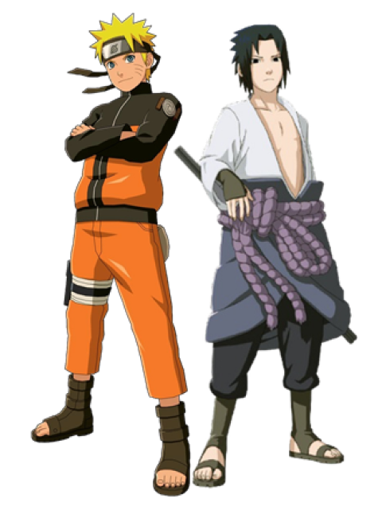
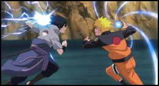
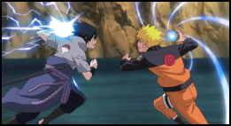

História
Um monstro poderoso conhecido como a Raposa de Nove Caudas (Bijū Kyūbi) atacou a vila ninja conhecida como Konoha,
matando várias pessoas. Em resposta, o líder da Vila – o Quarto Hokage – selou o monstro dentro de seu filho
recém-nascido, Naruto Uzumaki – tal ato custou sua vida. Quando criança, Naruto fica isolado da comunidade ninja,
pois ele é visto como o próprio monstro. Um decreto feito pelo líder atual, o Terceiro Hokage,
proíbe qualquer menção do ataque da Raposa para outras pessoas. Para que o naruto nao saiba que ele é o portador da Raposa, e nao fique triste que seu pai salvou a villa e deixou o mosntro no corpo dele. Mas Minato sabia que quando naruto crescesse ele iria conseguir domina a raposa, e com o tempo naruto foi fazendo amizade com a raposa, ate que consguiu controla o poder da raposa de 9 caudas.
Uzumaki Naruto
Naruto Uzumaki é um menino que vive em Konohagakure no Sato
ou simplesmente Konoha ou Vila Oculta da Folha, a vila ninja do País do Fogo.
Quando ainda bebê, Naruto teve aprisionada em seu corpo a Kyuubi no Youko
por Minato Namikaze (quarto Hokage, e seu pai), com a finalidade de salvar a Vila da Folha.
 


Episodio 480
Episodio 480
Episodio 480
MINATO NAMIKAZE
Minato Namikaze conhecido como Relâmpago Amarelo de Konoha,
foi um shinobi lendário que se tornou o Quarto Hokage de Konoha, parou uma Guerra,
e veio a morrer salvando a sua vila, como um Hokage e deixando um legado na historia.
Episodio 480
Episodio 480
Episodio 480
Uzumaki Naruto
Naruto Uzumaki é um menino que vive em Konohagakure no Sato
ou simplesmente Konoha ou Vila Oculta da Folha, a vila ninja do País do Fogo.
Quando ainda bebê, Naruto teve aprisionada em seu corpo a Kyuubi no Youko
por Minato Namikaze (quarto Hokage, e seu pai), com a finalidade de salvar a Vila da Folha.
Episodio 480
Episodio 480
Episodio 480